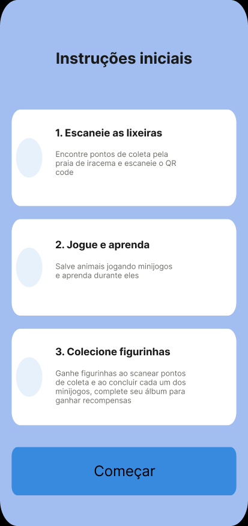
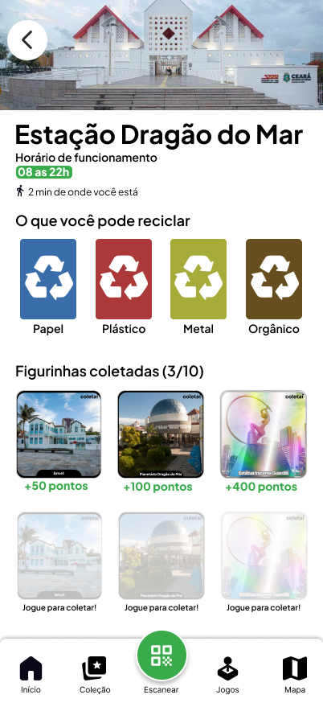
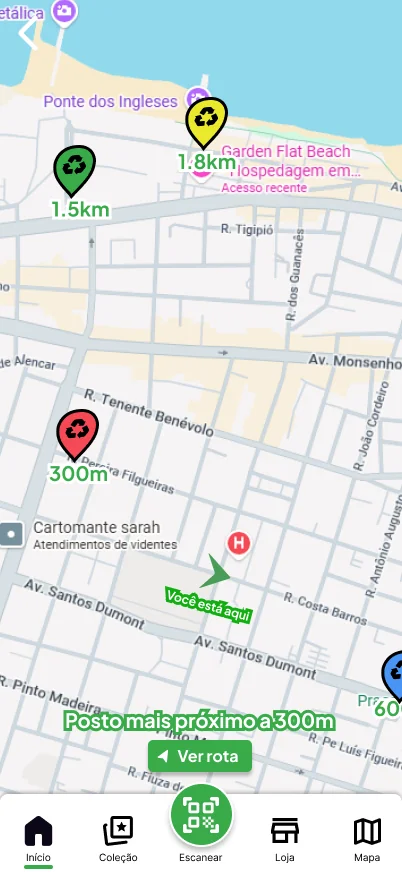
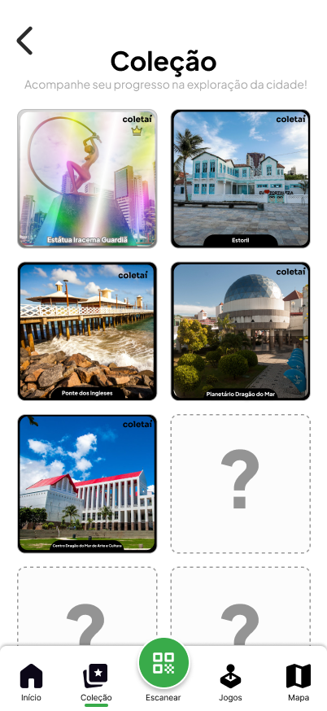
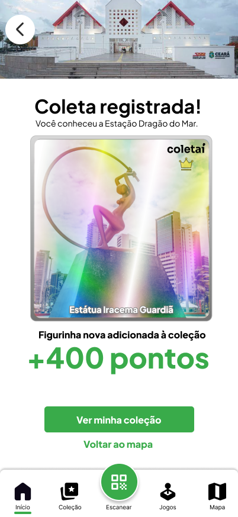

Como descartar o lixo durante um passeio?
Durante um passeio na Praia de Iracema, quem termina uma garrafa de água precisa encontrar onde descartá-la. Pode ser difícil localizar uma lixeira ou saber se ela recebe aquele material.
Idealizamos o Coletaí para ajudar nesse percurso. O projeto propõe um aplicativo ligado às estações de coleta, com localização, orientações e atividades de educação ambiental.
Como organizamos a pesquisa
Usamos o Double Diamond para organizar a pesquisa e chegar ao protótipo. Partimos da investigação do descarte na praia, definimos as dificuldades prioritárias e exploramos soluções em sketches e telas.
Entender o problema
Descobrir
Contexto da praia
Referências de outras cidades
Definir
Jornada de descarte
Dificuldades e oportunidades
Desenvolver a proposta
Desenvolver
Fluxos e sketches
Alternativas de interface
Entregar
Telas conectadas
Protótipo navegável
Cada diamante abre possibilidades e depois concentra as escolhas. O primeiro organiza o problema; o segundo, a proposta.
Na jornada, reunimos as ações de quem visita a praia, as dificuldades de cada etapa e possíveis formas de ajudar.
Referências de outras cidades
Comparamos sinalização, manutenção e operação em três destinos turísticos para identificar o que poderia ajudar na Praia de Iracema.
Fernando de Noronha
No estudo
- Pontos de entrega e lixeiras por cor
- Calendário de coleta
- Campanhas para turistas
O que levamos
Orientação clara e pontos de coleta próximos da circulação.
Balneário Camboriú
No estudo
- Limpeza contínua e monitoramento
- Cooperação entre instituições
- Manutenção da infraestrutura
O que levamos
O serviço precisa de manutenção e ações preventivas.
Rio de Janeiro
No estudo
- Coleta reforçada nos horários de pico
- Planejamento para eventos
- Campanhas e cooperativas
O que levamos
A coleta deve acompanhar o movimento da praia.
Do consumo ao descarte
Relacionamos cada etapa do descarte à dificuldade encontrada e a uma possibilidade de melhoria.
Deslize para comparar as cinco etapas.
| Etapa | 01Consumo | 02Procura | 03Identificação | 04Separação | 05Descarte |
|---|---|---|---|---|---|
| Ação | Compra água ou lanche. | Busca um coletor. | Observa cores e símbolos. | Escolhe o coletor. | Deposita o resíduo. |
| Dificuldade | O descarte ainda não está em foco. | Não encontra onde descartar. | Não entende as categorias. | Tem receio de separar errado. | Não recebe retorno ou orientação. |
| Oportunidade | Orientação em quiosques e pontos de venda. | Mapa de estações e acesso à rota. | Exemplos de resíduos na sinalização. | Orientação antes do descarte. | Confirmação e aprendizado após a ação. |
Como o nosso research aparece no aplicativo
O protótipo dá continuidade à jornada: localizar uma estação, conferir o que ela recebe, registrar a interação e voltar ao mapa ou à coleção. Cada tela precisa responder uma dúvida daquele momento.



Encontrar onde descartar
- Na jornada
- A procura por um coletor é onde tudo trava, ninguém quer sair caçando lixeira no meio do passeio.
- Na solução proposta
- Estações próximas e acesso à rota logo na tela inicial, sem ter que procurar por elas.
Saber o que a estação recebe
- Na jornada
- O receio de separar errado aparece antes do descarte, quando ainda dá tempo de desistir.
- Na solução proposta
- Horário de funcionamento e materiais aceitos reunidos na página de cada estação.

Ver a coleta virar coleção
- Na jornada
- A última etapa não devolve nada para quem descarta, o gesto simplesmente acaba.
- Na solução proposta
- A confirmação leva direto ao álbum de figurinhas com lugares da Praia de Iracema.
Figurinhas e lugares da Praia de Iracema
As figurinhas conectam a coleção a lugares da Praia de Iracema. O protótipo também explora minijogos, pontos e loja de recompensas: incentivos para aprender, explorar e voltar à experiência. =D

O que aprendemos
A nossa conclusão combina educação ambiental, organização da coleta e participação coletiva.
O Coletaí saiu das nossas imaginações e virou um protótipo acadêmico que funciona como um produto mínimo viável.